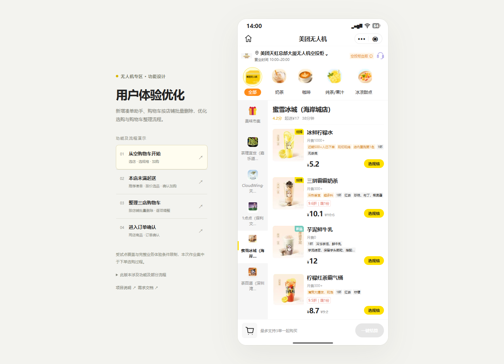

用户体验优化｜无人机专区
本次作业围绕无人机专区的下单选购过程，新增凑单助手和购物车按店铺批量删除两个功能，并优化加购反馈、起送进度联动和多店购物车整理流程。
由于所在位置附近没有可体验的试点，也无法通过朋友完成实际取餐体验，我未能真实体验完整业务流程。因此这次将范围集中在可以直接观察和操作的选购环节，以“完成本店凑单”和“整理多店购物车”两个任务形成闭环。
项目入口
| 内容 | 入口 |
|---|---|
| 提交仓库 | Rez-zero/homework |
| 可交互原型 / Happy Path | Demo HTML 文件 |
| 产品需求文档 | PRD：用户体验优化 |
| 异常状态展示 | 异常图列表 · 打开图集 · 查看总览 |
| 原型路径走查 | 走查结果与修复记录 |
| 工作过程与设计取舍 | 项目思考与迭代复盘 |
| 金额规则讨论 | 凑单金额计算规则 |

下载仓库后，用浏览器打开“无人机选购优化原型.html”即可体验。HTML 已内嵌所需图片和样式。仓库内的 HTML 链接用于定位文件；GitHub 文件页不会直接运行原型。
也可打开浏览器版项目说明或浏览器版PRD，沿页面中的入口查看原型、流程图和异常附图。

1. 我从什么问题开始
我先录制现有小程序的操作过程，整理页面、入口和跳转关系，再按原有页面搭建可交互骨架。选题逐渐从分享活动收敛到选购体验，依据主要来自以下观察。
| 观察 | 对用户任务的影响 | 本次处理 |
|---|---|---|
| 本店未满起送时，用户需要继续购买本店商品；部分受限提示却引导换店 | 换店加购不能补足原店的起送金额，下一步不够明确 | 增加凑单助手，让本店差额直接关联可继续选择的商品 |
| 部分商品或组合在加入时才反馈受限，表面标签无法解释全部情况 | 用户需要反复尝试才能找到可购买的选择 | 保留原购买校验，受限时置灰添加动作并说明原因 |
| 多店可以一起购买，但整理时缺少按店一次删除 | 不再需要某店商品时，需要逐项调整，并容易混淆全车清空 | 增加购物车按店铺批量删除，确认后只移除目标店 |
购买限制的观察主要来自蜜雪冰城（海岸城店）的商品组合，不能由此判断问题在所有门店的发生范围。我的方案从可观察的交互问题出发，没有把重量、优惠互斥等推测作为已确定的业务原因。
2. 此版本涉及功能及部分流程
新增一：凑单助手
- 从未达起送门店的差额提示进入，关联对应店铺。
- 提供推荐商品与金额筛选，支持选择、取消、改规格和增减数量。
- 顶部金额与进度随选择原位变化，不重新弹出页面。
- 点击“确认加购”后更新购物车；仍未满起送时可以继续选择。
- 多店分别显示凑单入口，某店完成凑单后，仅该店入口消失。
- 点击“自己选”清空本次未提交选择，返回本店继续选购。
新增二：购物车按店铺批量删除
- 在购物车门店分组旁提供删除入口。
- 确认目标门店后，删除该店全部商品，保留其他店的商品。
- 删除结果同步影响购物车数量、金额、凑单入口及结算状态。
- 最后一家店删除后，进入空购物车状态并可返回选购。
流程优化与沿用能力
- 优化加购受限后的提示和添加按钮状态，调整购物车后重新判断是否可加。
- 保留普通加购路径；凑单助手与普通加购使用同一套购买校验。
- 沿用按店起送、最多三家一起购买、商品规格选择和逐项加减购。
- 核心展示范围为选购、凑单、购物车整理及进入订单确认。未涉及部分没有在原型中体现。
3. Happy Path 演示
路径 A：完成本店凑单
- 下载仓库后，用浏览器打开 Demo HTML 文件，选择左侧“本店未满起送”场景。
- 点击目标门店的“推荐凑单”。
- 选择商品或切换金额区间，调整规格、数量，观察差额和进度变化。
- 点击“确认加购”，查看该店购物车和起送状态。
- 满足条件后进入订单确认，完成本次选购任务。
路径 B：整理多店购物车
- 下载仓库后，用浏览器打开 Demo HTML 文件，选择左侧“整理三店购物车”场景。
- 打开购物车，点击目标门店旁的删除入口。
- 确认删除后，查看目标店消失、其他店商品保留。
- 继续选购或凑单；删除最后一家店时查看空状态。
正常任务通过可交互原型展示；失败、超时、处理中和空状态通过异常图集补充，共十种状态。
4. 我如何逐步收敛方案
| 阶段 | 我的判断与调整 |
|---|---|
| 现状梳理 | 先记录页面和路径，建立可交互骨架，避免功能入口与已有流程脱节 |
| 探索方向 | 考虑同取餐点邀请首单、分享页和纪念徽章，也关注过取餐导航及客服 |
| 收敛范围 | 受试点位置、完整体验机会和业务信息限制影响，聚焦可以直接观察的下单选购过程 |
| 记录问题 | 对比四类商品和不同组合的加购结果，区分“界面反馈问题”与“尚不清楚的业务规则” |
| 调整切入点 | 单店提示优化的适用范围有限，于是将核心提升为服务本店起送任务的凑单助手 |
| 简化交互 | 从组合方案卡调整为推荐单品与金额筛选，保留多选、取消和数量调整，减少复杂组合计算依赖 |
| 完善闭环 | 增加按店批量删除、多店独立入口、金额联动和异常恢复展示 |
| 整理交付 | 将用户步骤、系统职责、字段需求、状态机、验收标准和附图统一到 PRD |
完整过程见项目思考与迭代复盘。
5. 价值与后续验证
| 预期用户价值 | 业务目标 | 后续关注指标 |
|---|---|---|
| 更容易找到能继续补足本店起送的商品 | 提高本店凑单任务完成率 | 助手进入后的本店达标率、确认加购成功率 |
| 理解当前受限原因，减少反复试错 | 减少选购受阻 | 重复加购失败率、受限后的继续选购比例 |
| 一次整理不再需要的门店 | 降低购物车整理成本 | 按店删除任务耗时、操作次数、误清空反馈 |
目前产出的是产品方案、可交互原型和异常状态图。尚无上线数据、用户访谈或完整履约体验结果，不能据此给出转化提升或耗时下降的结论。下一步需要补充更多门店场景，确认金额和购买校验的信息来源，并围绕两条核心任务开展可用性验证。
6. 工作方法与交付
本次工作中，我负责现状记录、问题判断、功能取舍、交互反馈和文案调整；使用 AI 辅助实现原型、整理文档及绘制状态图，再依据具体操作结果持续修订。方案保留了版本副本，便于对照每次修改的原因和结果。
主要提交内容为：可交互 HTML、PRD、异常状态图、README 和迭代复盘。原始录屏中包含个人信息的部分不纳入提交材料。